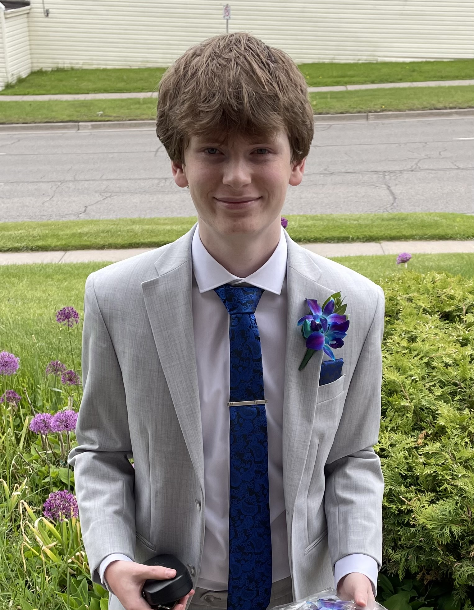

About Me!
Hello Again!
The video you're seeing is a little introduction about myself.
My name is Connor and I am a second year Networking and IT Security Major at Ontario Tech
University. I am excited to share my story with you and have you on board and along the way.
Learn More in the video!
Here are some fun facts about me! I have experience coding in six different coding languages. I have experience in: HTML, CSS, Java, Python, Javascript, and Lua. I have a huge interest in cars and computers, you will always catch me looking at cool cars driving by or old pieces of tech. I love video games. My favourite video games right now are geometry dash and forza horizon 6.

® Site by Connor D. All rights reserved.
Email: connor.donahue@ontariotechu.net